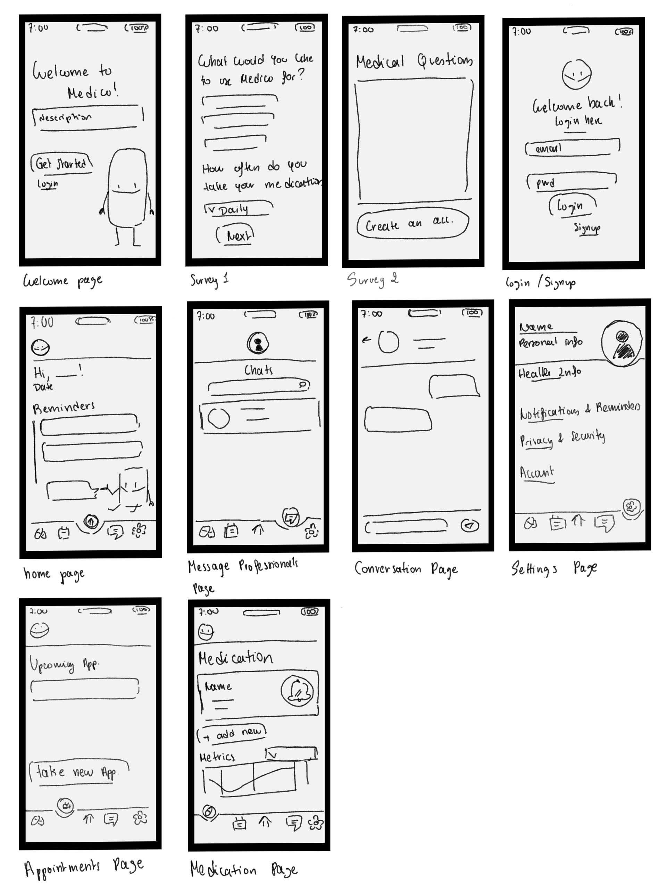
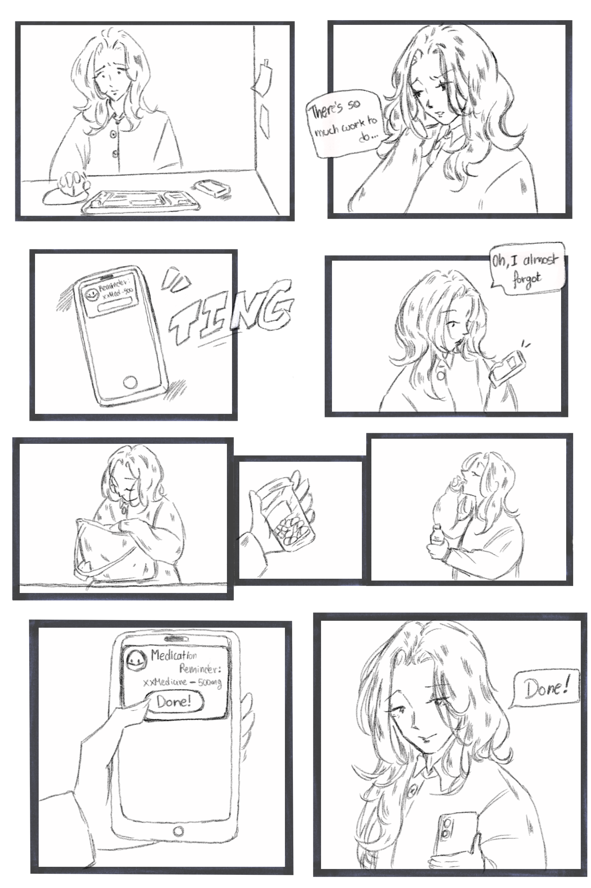

Medico – Chronic Health Companion App
SOEN 357 – UI/UX Design of a Health Companion App
1. Introduction
The purpose of Medico is to support individuals with chronic conditions that require regular medication intake and recurring medical appointments, such as diabetes, asthma, cardiovascular conditions, or long-term mental health treatment.
People with chronic illnesses often take medications daily. Missing doses or appointments can have serious consequences. Although there are existing health-related applications, many of them tend to be too complex, overwhelming, or impersonal. Medico aims to be simple, friendly, intuitive, and supportive.
This is why I opted for having a mascot whose goal is to interact with the user and share reminders related to medications and appointments. This design choice was made without taking away from the main purpose of the app. The mascot is not the central feature of the application, but rather a supporting element that helps make the experience feel less intimidating and overly serious.
Often, people enjoy gamifying their daily tasks, and when something feels too serious or rigid, they may avoid it altogether. In the context of health, this avoidance can lead to demotivation and eventually to users abandoning the app. Medico aims to deliver real and useful help in a fun and encouraging manner, motivating users rather than making them feel like they are completing yet another boring or stressful task.
2. Problem Statement
Medico aims to support users in remembering their medications and managing their health routines. Managing multiple medications can easily become confusing and discouraging, which may lead users to stop keeping track altogether.
In addition, many existing health applications lack a human and encouraging tone, which can make the experience feel cold or overwhelming. Medico aims to solve this problem by providing clear reminders while maintaining a friendly, supportive, and motivating approach.
3. Target Users
This application is designed to accompany users of different age groups in their daily lives by offering guidance and support.
User groups include:
- Teenagers or adults with chronic illnesses
- Users who need to keep up with daily medications
- Users managing regular doctor appointments
- Older adults or busy students and professionals
The app aims to be accessible to users who may not be very comfortable with technology and therefore require a simpler and clearer user interface. Medico provides the necessary features in the least confusing way possible, prioritizing clarity and ease of use.
4. User Research Methodology
In order to properly design the application, a user research survey was conducted to collect insights on how the application should be structured and which features would be most useful.
An anonymous online survey lasting approximately 5–10 minutes was conducted using Google Forms. The survey targeted individuals living with chronic health conditions or those closely managing such conditions.
4.1 Survey Design
The survey contained the following sections:
- Background Information: Collects the user’s age range, health condition, and number of medications taken regularly.
- Current Behavior: Explores how users currently remember their medications, how often they forget doses, and how they track doctor appointments.
- User Needs: Identifies difficulties in managing medications, frustrations with current health apps, desired features, and the importance of tone, simplicity, and personalization.
4.2 Survey Results & Key Findings
Unfortunately, the survey did not receive a large number of responses, resulting in a limited sample size (the survey was shared on Instagram and Reddit). However, a few relevant trends were still observed.
Key Findings:
- Most respondents expressed the importance of having a personalized experience when using a health application. This directly supports Medico’s goal of personalization and the inclusion of a mascot to make the app feel more engaging and “alive.”
- One notable suggestion from a respondent was to include a yearly progress graph showing improvements in health using real metrics. This idea was not initially planned but was later incorporated into the wireframe designs.
- Users expressed a preference for relevant and precise notifications, specifically indicating which medication to take at the requested time.
This also highlights that users do not appreciate being overwhelmed with notifications. Excessive notifications often lose their meaning or get ignored altogether. A simple and direct notification, containing only the necessary information and delivered at the right time, is far more effective.
5. User Personas
Chronic health conditions vary greatly, and users therefore have diverse needs. Despite these differences, all users must be supported within a single application.
Two personas were created based on responses collected from the survey. Creating these personas helps keep user needs in mind throughout the design process and ensures that design decisions remain user-centered.
- Persona 1
- Persona 2
6. User Needs & Design Requirements
- Provide clear medication reminders with notifications containing only relevant information
- Offer an easy and quick way for users to log their medication intake
- Maintain a friendly and encouraging tone without compromising the seriousness of the app’s purpose
- Ensure accessibility through readable fonts and a simple, intuitive interface
7. User Journey Mapping
To properly proceed with the design of the application, various use cases were identified. A user journey map was created to visualize how the user would interact with Medico throughout their daily routine.
8. Sketches
The design process began with simple sketches that outlined the overall structure and functionality of the app. These sketches included the following pages:
- Welcome page
- Survey
- Login / Sign-up
- Home page
- Settings
- Medications page
- Appointments page
- Messaging page
Originally, the mascot was designed as a leaf; however, a pill was found to be more intuitive and directly related to the purpose of the application.
9. Wireframes
Once satisfied with the overall concept, low-fidelity wireframes were created. These wireframes helped define the layout and features of each page while keeping the design simple before moving into the high-fidelity UI/UX design phase in Figma.
10. Storyboard
A storyboard was created to illustrate how the application would be used in a real-life context. It captures one of the many possible scenarios in which Medico would support a user throughout their day.
11. Design Phase
Designing an application involves multiple steps, one of which is finding visual inspiration.
11.1 The Mascot
The inspiration behind the mascot comes from personal experience with applications such as Duolingo. Duolingo’s mascot plays a major role in making the app engaging and memorable. While Medico does not aim to replicate Duolingo’s frequent notification style, the idea of a friendly mascot that encourages users was a strong source of inspiration.
11.2 Color Palette
Initially, an orange color palette was explored to create a warm and welcoming feeling. However, it quickly began to resemble a pet-related application. For this reason, a green color palette was chosen instead.
Green is commonly associated with health, balance, and calmness. It helps reinforce the app’s purpose while making users feel at ease.
11.3 Typography
Medico is meant to be intuitive, clear, and visually consistent. For this reason, a simple and readable font was chosen: Roboto. Roboto is commonly used on Android devices, is highly legible, and does not distract from the content.
(Add image of font here)
11.4 Icons and Illustrations
Icons were selected from Flaticon, ensuring that a consistent icon set was used throughout the application. Icons with thicker lines were chosen to match the visual style of the mascot.
11.5 Naming & Logo
The name of the app and the mascot were intentionally kept the same to reinforce brand recognition. The logo is simply the face of the mascot.
The name Medico was chosen because it is short, catchy, and directly related to health, without sounding overly serious or intimidating.
12. Prototype
The final interactive prototype was created in Figma. It demonstrates the various interactions within the app and showcases its main features.
13. Final Design
The application opens with a welcome page where the mascot, Medico, greets the user and briefly explains the app’s purpose. From there, the user can either log in or complete a short onboarding survey to personalize their experience.
Once logged in, the user arrives on the home page, which presents a daily dashboard showing:
- Scheduled medications for the day
- Encouraging messages from Medico
- Progress indicators
The Messages page allows users to communicate with healthcare professionals for guidance or support.
The Appointments page displays upcoming appointments, allows users to set reminders, add events to their calendar, and create new appointments.
The Medications page lists all current medications along with dosage instructions, scheduled times, and optional notes. A progress dashboard at the bottom displays monthly or yearly health metrics.
Finally, the Settings page allows users to manage personal information, notification preferences, and health-related settings.
14. Usability Testing
(To be completed)
15. Reflection
While Medico successfully addresses medication and appointment tracking, future iterations could explore caregiver integration and professional dashboards. Conducting surveys with healthcare professionals would provide valuable insight into their needs and expectations.
Accessibility remains a core priority. Future improvements include dark mode, light mode, high-contrast mode, colorblind options, adjustable font sizes, and full screen reader compatibility.
16. Conclusion
This research allowed for the design of a health companion application that supports users managing chronic conditions in a fun, intuitive, and motivating manner. Medico uses a friendly mascot to deliver personalized reminders while avoiding unnecessary complexity or information overload.
By focusing on encouragement, simplicity, and personalization, Medico aims to support users in maintaining consistency and motivation in their daily health routines.